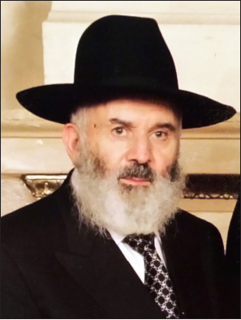

R’ Yaakov Elberg A”H
On Friday, 17 Teves, word spread of the sad news of the sudden passing of R’ Yaakov Elberg. He was 76.

R’ Yaakov was born in Kutais in the Soviet republic of Georgia. His father R’ Shabtai had learned in Yeshivas Tomchei T’mimim in Lubavitch and then in underground yeshivos in Poltava and Charkov.
His father, who learned sh’chita and mila in yeshiva, was a dominant figure in the Jewish community of Kutais and was considered the main mohel and one of the main shochtim in the city.
R’ Yaakov was raised to Ahavas HaTorah. He often spoke about his father’s diligence in Torah study. Despite his heavy work schedule, he did not forego his learning. Every night, when he returned from work, he would sit down to learn until three in the morning. By six-seven o’clock he was already on his way to shul, a kilometer’s walk away.
This chinuch had a tremendous effect on R’ Yaakov and years later, when he became a successful businessman, he never neglected his learning or davening with a minyan. Those who knew him knew that even on very busy days, you would find him in 770 between Mincha and Maariv. Afterward he would stay on to learn several regular shiurim.
Along with love for Torah, his father also put a lot into chinuch for Ahavas Yisroel. Their home was open to all in need and Chassidim were constantly coming and going. During the war, when starvation was rampant and thousands died of starvation, they did not always have food to eat but even during this difficult period, his parents never refused to host Chassidim.
During the period of government persecution, when many Chassidim escaped from Russia’s main cities for Central Asia, some of them went to Kutais and would occasionally visit the Elberg house for a meal. Among these Chassidim were R’ Eliezer Nannes (of Subbota), R’ Dovid Skolnik, R’ Sholom Ber Notik, R’ Yechezkel Brod, and many others.
R’ Yaakov spent time in the company of these august Chassidim. R’ Yaakov often said that he cannot forget those Chassidishe farbrengens when Chassidim said l’chaim and farbrenged and danced all night. They were role models of genuine Chassidim, who devoted themselves wholeheartedly to the Rebbe’s wishes despite all the tzaros.
When R’ Yaakov grew older, his father sent him to learn in a secret yeshiva along with another 10-15 boys. The KGB once discovered them and at the last minute the owners of the house managed to hide the melamed in the cellar. The KGB agents beat the young talmidim and threatened to imprison them. That was life in the shadow of the KGB.
Due to the difficult situation and government persecution, the natural feeling of mutual responsibility which Jews usually have, became even stronger.
R’ Yaakov related:
“I once traveled to the capitol on business and I arrived at the airport on Erev Shabbos in order to return home. I suddenly noticed a Jewish man, about 35 years old, with a beard and peios, who looked at a loss. There was a small airplane and since many people wanted to travel, there was no more room. I always gave bribes when necessary and got a place even if a hundred people remained down below.
“When I saw that he did not know what to do and where he would spend Shabbos, I went over to him and said in Russian, ‘Come over to the side. I want to talk to you.’ At first, he was very nervous since he thought I belonged to the KGB.
“I asked him, ‘Why do you look worried? What’s the problem? Can I help you?’ After he admitted that he was a Lubavitcher Chassid, I said to him that so was I and I asked him again, ‘What happened?’ He told me, ‘I need to get to Kutais for Shabbos.’ I said, ‘Give me your passport.’ When I saw that he was afraid to give it to me, I mentioned the names of some of the great Chassidim who had been in our house and said, ‘My father is also a Chassid.’
“He was finally convinced and he gave me his passport. I went to the people in charge and after bribing them, they gave me a ticket. When I returned to him with the ticket he was thrilled and we traveled together. The entire time we sat quietly, in fear of those around us. Years later, I met him in Crown Heights and he remembered this incident.”
***
In 5732, when a crack opened in the Iron Curtain, R’ Yaakov and his parents immigrated to Eretz Yisroel. The Rebbe then invited all the new immigrants to come to 770 and contributed toward the cost of the tickets.
After going to the Rebbe, R’ Yaakov decided to live in Crown Heights and merited special gestures of closeness from the Rebbe. Having been influenced by the holy work of his father, R’ Yaakov took care of the members of his community who immigrated to the US, many of whom settled in Queens. He saw to it that a Chabad mikva was built there under the direction of R’ Zalman Shimon Dworkin.
R’ Yaakov considered himself a shliach of the Rebbe to Queens. For a period of time he gave shiurim there himself and then brought shluchim to take care of the spiritual needs of the community. The members of the community greatly appreciated his work on their behalf and bestowed him with the title of President of the community.
In one of his first private audiences with the Rebbe, he asked for bountiful parnasa. The Rebbe told him: Give (tz’daka) and you will be given (from heaven). R’ Yaakov, who was working at the time as a hired hand barely managed on his salary. He asked the Rebbe from where he should take the money to give to tz’daka. The Rebbe said: Give from what you have and Hashem will give you.
Over the years, he bought yellow cab medallions and was encouraged to do so nonstop by the Rebbe. Even during a period of recession the Rebbe encouraged him to continue buying cabs. “Buy as many as you can,” said the Rebbe.
R’ Yaakov gave generously of his money to tz’daka, especially to the Rebbe’s shluchim. He once said that he cannot stand aloof as thousands of shluchim devote themselves to the Rebbe and he wanted to be a partner with them. Every so often he would send hundreds of checks to shluchim. He made sure that there were no identifying signs on the checks and he also sent the checks through a mail service located outside of Crown Heights in order to remain anonymous. In recent years he gave out close to $30,000 each year at the Kinus HaShluchim.
His son Reuven says that his father made a cheshbon ha’nefesh every so often as to whether he was fulfilling the Rebbe’s horaa to “give from what you have.” He always tried to add and Hashem responded in kind. He was very successful in his business.
His heart was wide open to all aspects of tz’daka and chesed. He supported the Kupas Bachurim that pays for medication for talmidim who are not well and he would go into the pharmacy now and then and pay the Kupa’s bill.
When a chassan would ask him for help for his wedding, he would first wish him a hearty mazal tov and would then give a handsome donation. He always gave a dollar to any poor person who approached him and on Friday he gave two dollars, one for Friday and one for Shabbos.
R’ Yaakov was privileged to be among the wealthy men who donated large sums to the Rebbe and had special private audiences. Over the years, he consulted with the Rebbe about his business and followed what the Rebbe told him. Even when his friends and acquaintances thought otherwise, he followed what the Rebbe told him.
About eighteen years ago, when one of the mosdos in Crown Heights was in serious financial trouble which nearly led to its closing, R’ Yaakov participated in a meeting of wealthy men and the Mara D’Asra, R’ Kalman Marlow. Although R’ Yaakov was soft-spoken by nature, he stood up and spoke heatedly about it not being possible that a school should close due to lack of money. He announced the large donation he would be giving, which was beyond his capabilities (to the extent that he had to take out a bank loan in order to fulfill his pledge to the yeshiva) and this spurred the other men to make donations too, which got the yeshiva back on its feet.
In the 90’s he was diagnosed with a serious respiratory problem. The top doctors he consulted with said he would have to undergo an operation. He asked the Rebbe and the Rebbe told him not to do it but to go on a diet and then to get checked again in six months. Needless to say, in the examination done six months later the problem was no longer present.
A similar story happened three years ago. He began to suffer from severe back pain and the doctors recommended surgery. His son Reuven wrote to the Rebbe and put the letter in a volume of Igros Kodesh. The Rebbe’s answer he opened to had been sent to a doctor in Eretz Yisroel who recommended that a Chassid undergo an operation and said it was easy and simple. The Rebbe wrote to this doctor saying that according to what he knew, the operation was not that simple and that new medications were being discovered for this problem and therefore he did not think the operation should be done.
In accordance with this clear answer, R’ Yaakov canceled his surgery. R’ Osdoba, member of the Badatz, referred him to a doctor who cured him with new methods without operating.
***
On Friday, after undergoing medical treatment, his condition quickly deteriorated and he passed away. He is survived by his wife Esther and his children Reuven, Eliyahu, Sholom, and a daughter Tamar Pewsner, grandchildren and great-grandchildren.
Beis Moshiach (staff). "R’ Yaakov Elberg A”H." Beis Moshiach, no. 909 (December 30, 2013).